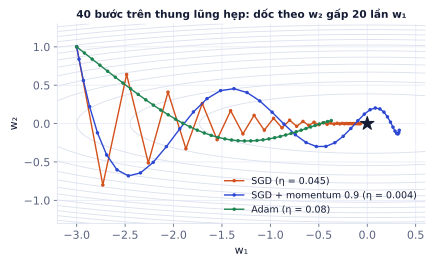
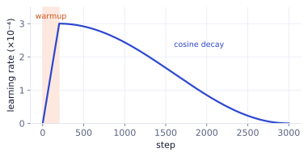
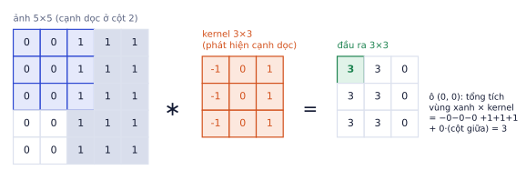
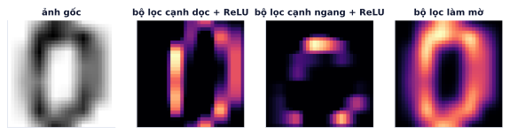
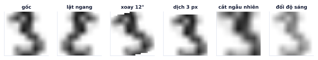
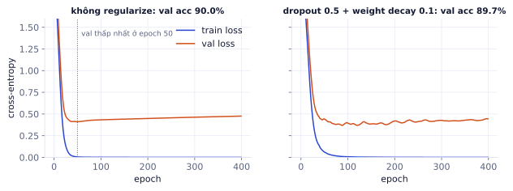
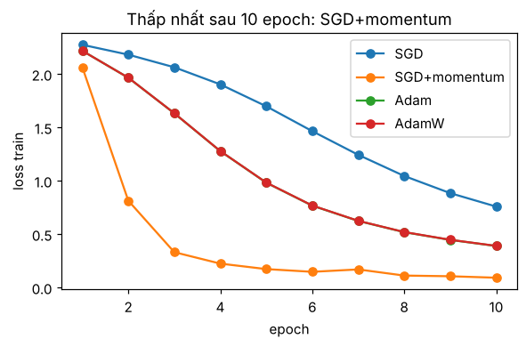
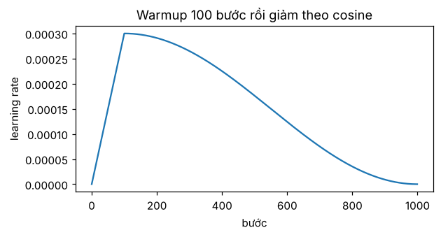

Bài 1
Kích thước đầu ra của convolution
tính tayẢnh vào 32×32.
Lời giải
(32 + 2 − 3)/1 + 1 = 32. (32 − 5)/2 = 13.5, lấy phần nguyên 13, cộng 1 được 14. MaxPool 2 giảm còn 16.
Bài 1 train mạng nhỏ trên dữ liệu nhỏ. Train mạng thật trên 50.000 ảnh cần thêm bốn thứ: chia mini-batch, optimizer thông minh hơn (Adam), kiến trúc hợp với ảnh (CNN), và các kỹ thuật chống học thuộc (BatchNorm, Dropout, augmentation). Học xong bài này bạn hiểu từng dòng của Lab 1 và biết vì sao nó được viết như vậy.
Bạn không thể đưa 50.000 ảnh vào GPU một lúc, và cũng không cần: một mẫu nhỏ đủ ngẫu nhiên đã cho hướng đi gần đúng. Cách chia batch ảnh hưởng trực tiếp tới tốc độ train, bộ nhớ cần, và cả chất lượng model.
Ta lấy từng mini-batch (ví dụ 128 ảnh), tính gradient trên đó và cập nhật ngay:
iteration (step) = một lần cập nhật trên một batch
epoch = đi hết toàn bộ tập train một lần
số step / epoch = ⌈số mẫu / batch size⌉
MNIST có 60.000 ảnh train. Với batch 256: ⌈60.000 / 256⌉ = 235 step mỗi epoch (step cuối chỉ có 96 ảnh). 10 epoch là 2.350 lần cập nhật. Đổi sang batch 64 thì có 938 step mỗi epoch: mỗi step rẻ hơn, nhưng nhiều step hơn.
Gradient từ một batch là ước lượng có nhiễu của gradient thật trên toàn bộ dữ liệu. Nhiễu này không xấu: nó giúp thoát khỏi các vùng phẳng và điểm yên ngựa, và thường cho model tổng quát tốt hơn so với gradient "sạch".
| Batch size | Ưu điểm | Nhược điểm |
|---|---|---|
| Nhỏ (16–64) | ít bộ nhớ, nhiễu giúp tổng quát | chậm trên GPU (không tận dụng song song) |
| Lớn (512+) | nhanh trên GPU, gradient ổn định | cần nhiều bộ nhớ, thường cần learning rate lớn hơn và warmup |
Quy tắc thực hành: chọn batch lớn nhất vừa bộ nhớ GPU trong khoảng 32–512, rồi chỉnh learning rate. Khi tăng batch k lần, thử tăng learning rate khoảng k lần (với SGD) hoặc √k lần (với Adam).
import torch, torchvision
import torchvision.transforms as T
from torch.utils.data import DataLoader
# CIFAR-10 thật (Colab, cần mạng): torchvision.datasets.CIFAR10("data", train=True, download=True, transform=T.ToTensor())
# ở đây dùng FakeData: ảnh ngẫu nhiên cùng định dạng, không cần tải
train_ds = torchvision.datasets.FakeData(size=2000, image_size=(3, 32, 32), num_classes=10, transform=T.ToTensor())
val_ds = torchvision.datasets.FakeData(size=500, image_size=(3, 32, 32), num_classes=10, transform=T.ToTensor(), random_offset=1)
train_loader = DataLoader(train_ds, batch_size=128, shuffle=True, num_workers=2, pin_memory=torch.cuda.is_available())
val_loader = DataLoader(val_ds, batch_size=256, shuffle=False)
for x, y in train_loader: # mỗi vòng lặp trả về một batch [128, 3, 32, 32] và [128]
print(x.shape, y.shape, len(train_loader), "batch mỗi epoch")
break
torch.Size([128, 3, 32, 32]) torch.Size([128]) 16 batch mỗi epoch
shuffle=True cho tập train là bắt buộc: nếu dữ liệu xếp theo lớp (5.000 ảnh máy bay rồi 5.000 ảnh ô tô...), model sẽ học lệch theo từng đoạn. num_workers cho phép CPU chuẩn bị batch sau trong lúc GPU đang tính batch trước.
Optimizer quyết định dùng gradient thế nào để cập nhật tham số. SGD thuần đi zig-zag khi mặt loss có hướng dốc và hướng phẳng; các optimizer hiện đại sửa điều đó, và chọn đúng optimizer có thể rút thời gian train nhiều lần.
SGD: w ← w − η·g
Momentum: v ← μ·v + g; w ← w − η·v (μ ≈ 0.9)
Momentum giữ một "vận tốc" v cộng dồn gradient các bước trước. Hướng gradient ổn định (dọc theo thung lũng) được tăng tốc; hướng gradient đổi dấu liên tục (ngang thung lũng) bị triệt tiêu.
Gradient không đổi g = 2, η = 0.05, μ = 0.9, bắt đầu w = 0, v = 0:
| Bước | v = 0.9·v + 2 | w = w − 0.05·v |
|---|---|---|
| 1 | 2.0 | −0.10 |
| 2 | 3.8 | −0.29 |
| 3 | 5.42 | −0.561 |
Vận tốc tăng dần về giới hạn 2 / (1 − 0.9) = 20: khi gradient ổn định, momentum đi nhanh gấp tới 10 lần SGD thuần.
m ← β₁m + (1−β₁)g trung bình động của gradient (hướng đi)
v ← β₂v + (1−β₂)g² trung bình động của bình phương gradient (độ lớn)
m̂ = m/(1−β₁ᵗ); v̂ = v/(1−β₂ᵗ) hiệu chỉnh vì m, v bắt đầu từ 0
w ← w − η·m̂ / (√v̂ + ε)
Adam chia gradient cho độ lớn trung bình của chính nó, nên mỗi tham số có bước đi riêng và không phụ thuộc thang đo của gradient.
Hai tham số, gradient ở bước đầu lần lượt là 0.01 và 100. Với η = 0.001 (β₁ = 0.9, β₂ = 0.999):
Gradient chênh nhau 10.000 lần nhưng bước đi bằng nhau. Với SGD, tham số 2 sẽ bước gấp 10.000 lần tham số 1.

AdamW tách weight decay ra khỏi gradient: w ← w − η·(bước Adam + λ·w). Với Adam thường, thêm L2 vào loss rồi chia cho √v̂ làm weight decay yếu đi với các tham số có gradient lớn; AdamW sửa điều đó. Đây là optimizer mặc định cho Transformer và hầu hết model hiện đại.
| Optimizer | Learning rate thường dùng | Khi nào |
|---|---|---|
| SGD + momentum 0.9 | 0.01–0.1 | CNN cho ảnh khi muốn kết quả tốt nhất và chịu tune |
| AdamW | 1e-3 (CNN nhỏ), 3e-4 (Transformer), 1e-5–5e-5 (fine-tune) | mặc định an toàn |
Learning rate tốt ở đầu quá trình train (khi còn xa đáp án) khác learning rate tốt ở cuối (khi cần tinh chỉnh). Thay đổi learning rate theo thời gian thường cho thêm vài điểm accuracy mà không tốn gì.
CosineAnnealingLR.
import torch.nn as nn
model, epochs = nn.Linear(10, 2), 30 # model nhỏ chỉ để xem lịch learning rate
opt = torch.optim.AdamW(model.parameters(), lr=3e-4, weight_decay=0.05)
sched = torch.optim.lr_scheduler.OneCycleLR(opt, max_lr=3e-4, total_steps=len(train_loader) * epochs, pct_start=0.05)
lrs = []
for step in range(len(train_loader) * epochs):
opt.step() # trong vòng lặp thật: backward() rồi opt.step()
sched.step() # ... và gọi sched.step() ngay sau opt.step()
lrs.append(sched.get_last_lr()[0])
peak = max(lrs)
print(f"{len(lrs)} bước: lr bắt đầu {lrs[0]:.1e}, đạt đỉnh {peak:.1e} ở bước {lrs.index(peak)}, kết thúc {lrs[-1]:.1e}")
480 bước: lr bắt đầu 1.3e-05, đạt đỉnh 3.0e-04 ở bước 22, kết thúc 4.8e-09
Trọng số ban đầu quá lớn thì kích hoạt "nổ" qua các lớp; quá nhỏ thì tín hiệu tắt dần. Ý tưởng: giữ phương sai đầu ra mỗi lớp xấp xỉ phương sai đầu vào (nhớ P0.5: tổng n số độc lập có phương sai gấp n lần).
| Cách | Phương sai trọng số | Dùng với |
|---|---|---|
| He (Kaiming) | 2 / n_in | ReLU |
| Xavier (Glorot) | 2 / (n_in + n_out) | tanh, sigmoid |
PyTorch đã khởi tạo hợp lý sẵn cho nn.Linear và nn.Conv2d, nên bạn hiếm khi phải tự làm, nhưng cần biết khi tự viết lớp mới.
MLP coi ảnh là một dãy số, bỏ qua việc pixel cạnh nhau liên quan nhau và một con mèo ở góc trái vẫn là con mèo khi ở góc phải. CNN đưa hai hiểu biết đó vào kiến trúc, nên học nhanh hơn, cần ít tham số hơn, và chính xác hơn hẳn trên ảnh.
Lớp Linear nối mọi pixel với mọi neuron: ảnh 32×32×3 vào 512 neuron đã cần 1.573.376 trọng số. Convolution trượt một bộ lọc nhỏ (ví dụ 3×3) khắp ảnh:
Ảnh 5×5 có một cạnh dọc (trái tối, phải sáng). Bộ lọc 3×3 có cột trái −1, cột giữa 0, cột phải +1. Trượt bộ lọc, mỗi vị trí tính tổng tích từng phần tử:

Đầu ra cao (3) đúng ở vị trí có cạnh, bằng 0 ở vùng đồng màu. Đó là "bản đồ đặc trưng" (feature map) cho biết cạnh dọc nằm ở đâu.
Trong CNN thật, các bộ lọc không do người viết mà được học. Lớp đầu thường tự học ra những bộ lọc giống bộ phát hiện cạnh và màu.

Kích thước đầu ra = ⌊(n + 2p − k) / s⌋ + 1
n: kích thước vào, k: kernel, p: padding (đệm 0 quanh ảnh), s: stride (bước trượt)
Số tham số Conv2d(C_in, C_out, k) = C_in · C_out · k · k + C_out
Ảnh MNIST 28×28:
Conv2d(3, 16, 5): 3 × 16 × 5 × 5 + 16 = 1.216 tham số, dù đầu vào là ảnh bao nhiêu pixel cũng vậy. So với 1,57 triệu của lớp Linear ở trên.
Conv2d(3, 32, 3) thành 32 kênh đặc trưng.import torch, torch.nn as nn
def block(cin, cout):
return nn.Sequential(nn.Conv2d(cin, cout, 3, padding=1), nn.BatchNorm2d(cout), nn.ReLU(),
nn.Conv2d(cout, cout, 3, padding=1), nn.BatchNorm2d(cout), nn.ReLU(),
nn.MaxPool2d(2))
model = nn.Sequential(block(3, 32), block(32, 64), block(64, 128), # 32→16→8→4
nn.Flatten(), nn.Linear(128 * 4 * 4, 10))
print(model(torch.randn(8, 3, 32, 32)).shape, sum(p.numel() for p in model.parameters()), "tham số")
torch.Size([8, 10]) 308394 tham số
Tính sai kích thước trước lớp Linear. Sau ba lần MaxPool2d(2), ảnh 32×32 còn 4×4; nhân 128 kênh là 2.048 đầu vào cho Linear. Tính sai thì lỗi "mat1 and mat2 shapes cannot be multiplied". Mẹo: dùng nn.LazyLinear(10) để PyTorch tự suy ra, hoặc chạy một batch giả và in shape trước lớp Linear.
Ảnh 64×64 qua Conv2d kernel 3, padding 1, stride 1, rồi MaxPool2d(2), rồi Conv2d kernel 3, padding 0, stride 1.
Mạng sâu khó train vì phân phối đầu vào của mỗi lớp thay đổi liên tục khi các lớp trước được cập nhật. BatchNorm ổn định điều đó, cho phép learning rate lớn hơn và train nhanh hơn nhiều. Dropout là cách đơn giản nhất để chống học thuộc ở lớp kết nối đầy đủ.
BatchNorm chuẩn hóa đầu ra của lớp theo thống kê của batch, rồi co giãn bằng hai tham số học được:
x̂ = (x − μ_batch) / √(σ²_batch + ε)
y = γ·x̂ + β γ, β học được: mạng có thể "hoàn tác" chuẩn hóa nếu cần
Một kênh trong batch có 4 giá trị [1, 3, 5, 11]. μ = 5, σ² = (16 + 4 + 0 + 36)/4 = 14.
Với γ = 1, β = 0 (giá trị khởi tạo), đầu ra chính là x̂: trung bình 0, phương sai 1.
Với ảnh, BatchNorm2d chuẩn hóa theo từng kênh, gộp qua batch và mọi vị trí (N, H, W). Mỗi kênh có một cặp γ, β, nên BatchNorm2d(C) có 2C tham số học được.
Train và eval khác nhau: khi train, BatchNorm dùng thống kê của batch hiện tại và cập nhật dần running mean/var. Khi eval, nó dùng running mean/var (vì lúc dự đoán có thể chỉ có một ảnh, không có "batch").
Khi train, Dropout(p) tắt ngẫu nhiên tỉ lệ p neuron và nhân phần còn lại với 1/(1 − p) để giữ nguyên kỳ vọng. Khi eval, dropout không làm gì.
Dropout(0.2), một neuron có giá trị 4. Khi train: 20% khả năng thành 0, 80% khả năng thành 4 / 0.8 = 5. Kỳ vọng: 0.8 × 5 = 4, đúng bằng giá trị gốc, nên lúc eval (không dropout) đầu ra cùng thang đo.
Dropout buộc mạng không dựa vào vài neuron riêng lẻ, giống train một tập hợp nhiều mạng con rồi lấy trung bình. Hay dùng ở lớp Linear (p = 0.2–0.5); với CNN hiện đại có BatchNorm, dropout ít được dùng trong các khối conv.
Ghi nhớ: model.train() khi train, model.eval() và torch.no_grad() khi đánh giá. Quên một trong hai là lỗi phổ biến nhất khiến kết quả lệch mà không báo lỗi gì.
Batch quá nhỏ với BatchNorm. Với batch 2–4, thống kê batch rất nhiễu và BatchNorm làm hại nhiều hơn giúp. Khi buộc phải dùng batch nhỏ (ảnh độ phân giải cao, video), dùng GroupNorm hoặc LayerNorm (không phụ thuộc batch). Transformer dùng LayerNorm vì lý do này (P3).
Dữ liệu có nhãn đắt. Augmentation tạo ra "dữ liệu mới" miễn phí bằng cách biến đổi ảnh có sẵn theo những cách không làm đổi nhãn. Trên các bộ dữ liệu ảnh nhỏ, augmentation thường là cách cải thiện accuracy rẻ nhất.
Mỗi epoch, mỗi ảnh train được biến đổi ngẫu nhiên một chút. Model thấy "nhiều" ảnh khác nhau hơn và học được rằng một con mèo lệch sang trái hay tối hơn một chút vẫn là con mèo.

import torchvision.transforms as T
train_tf = T.Compose([
T.RandomCrop(32, padding=4), # đệm 4 pixel rồi cắt ngẫu nhiên lại 32×32
T.RandomHorizontalFlip(),
T.ColorJitter(0.2, 0.2, 0.2),
T.ToTensor(),
T.Normalize((0.4914, 0.4822, 0.4465), (0.2470, 0.2435, 0.2616)),
])
test_tf = T.Compose([T.ToTensor(), T.Normalize((0.4914, 0.4822, 0.4465), (0.2470, 0.2435, 0.2616))])
img = T.ToPILImage()(torch.rand(3, 32, 32)) # một ảnh thử
a, b = train_tf(img), train_tf(img) # cùng ảnh, hai lần biến đổi ngẫu nhiên khác nhau
print(a.shape, "giống nhau?", torch.equal(a, b))
torch.Size([3, 32, 32]) giống nhau? False
Chỉ áp dụng augmentation cho train, không bao giờ cho val/test: bạn muốn đo model trên ảnh thật như lúc chạy thật.

Dấu hiệu overfitting: train loss tiếp tục giảm, val loss đi ngang rồi tăng. Thuốc chữa theo thứ tự nên thử:
weight_decay=0.01–0.1).Transfer learning thường thắng tất cả các mẹo trên. Thay vì train CNN từ đầu, lấy một model đã train trên ImageNet (hàng triệu ảnh) và chỉ fine-tune lớp cuối. Model đó đã biết cạnh, hoa văn, bộ phận vật thể; bạn chỉ dạy nó phân biệt các lớp của mình. Với vài nghìn ảnh, transfer learning thường hơn train từ đầu 10–20 điểm accuracy. Đây là nội dung P2.3.
Dropout(0.25), neuron có giá trị 6 và không bị tắt. Một batch có 4 ảnh, BatchNorm2d(16).
| Chủ đề | Điều cần nhớ |
|---|---|
| Mini-batch | step/epoch = ⌈N / batch⌉; shuffle tập train |
| Optimizer | AdamW mặc định; SGD + momentum cho CNN khi chịu tune |
| Lịch lr | warmup ngắn + cosine decay |
| Khởi tạo | He cho ReLU; PyTorch đã làm sẵn |
| Convolution | cục bộ + dùng chung trọng số; out = ⌊(n + 2p − k)/s⌋ + 1 |
| BatchNorm | chuẩn hóa theo kênh; train dùng thống kê batch, eval dùng running |
| Dropout | chỉ khi train, nhân 1/(1 − p) |
| Augmentation | chỉ cho train, phải giữ nguyên nhãn |
| Overfit | augmentation → weight decay → dropout → early stopping |
| Thuật ngữ | Nghĩa |
|---|---|
| mini-batch | nhóm mẫu dùng cho một lần cập nhật |
| DataLoader | công cụ chia batch, xáo trộn, nạp song song |
| momentum | quán tính, cộng dồn gradient các bước trước |
| Adam / AdamW | optimizer có bước thích nghi / thêm weight decay tách riêng |
| warmup / cosine decay | tăng dần lr lúc đầu / giảm lr theo hàm cos |
| He / Xavier init | các cách khởi tạo giữ phương sai qua lớp |
| convolution / kernel | phép trượt bộ lọc / bộ lọc |
| padding / stride | đệm viền / bước trượt |
| feature map | bản đồ đặc trưng, đầu ra của một bộ lọc |
| pooling | gộp vùng nhỏ (max, average) để giảm kích thước |
| BatchNorm / LayerNorm / GroupNorm | các cách chuẩn hóa kích hoạt |
| dropout | tắt ngẫu nhiên neuron khi train |
| data augmentation | biến đổi ảnh train để có thêm dữ liệu |
| early stopping | dừng khi val không cải thiện |
Ảnh vào 32×32.
(32 + 2 − 3)/1 + 1 = 32. (32 − 5)/2 = 13.5, lấy phần nguyên 13, cộng 1 được 14. MaxPool 2 giảm còn 16.
3·32·9 + 32 = 896. 32·64·9 + 64 = 18.496. BatchNorm có γ và β cho mỗi kênh: 2·64 = 128 (running mean/var là buffer, không phải tham số học).
Dùng: SGD, SGD + momentum, Adam, AdamW; mini-batch; đọc đường loss.
Train cùng một mạng (cùng khởi tạo) trên bộ chữ số 8 × 8 với bốn optimizer, mỗi cái 10 epoch, batch 64, learning rate gợi ý thường dùng: SGD 0,05; SGD momentum 0,9 với lr 0,05; Adam 1e-3; AdamW 1e-3 với weight decay 0,01. Vẽ loss train theo epoch và xem optimizer nào hạ loss nhanh nhất.
import torch, torch.nn as nn
import matplotlib.pyplot as plt
from torch.utils.data import TensorDataset, DataLoader
from sklearn.datasets import load_digits
d = load_digits()
ds = TensorDataset(torch.tensor(d.data / 16, dtype=torch.float32), torch.tensor(d.target))
def chay(make_opt, epochs=10):
torch.manual_seed(0)
model = nn.Sequential(nn.Linear(64, 64), nn.ReLU(), nn.Linear(64, 10))
opt = make_opt(model.parameters())
loader = DataLoader(ds, batch_size=64, shuffle=True, generator=torch.Generator().manual_seed(0))
hist = []
for _ in range(epochs):
tong = 0.0
for xb, yb in loader:
opt.zero_grad(); loss = nn.functional.cross_entropy(model(xb), yb); loss.backward(); opt.step()
tong += loss.item() * len(xb)
hist.append(tong / len(ds))
return hist
# TODO: hist[tên] cho 4 optimizer, vẽ, tot_nhat
torch.optim.SGD(p, lr=0.05, momentum=0.9), torch.optim.AdamW(p, lr=1e-3, weight_decay=0.01). Truyền vào chay bằng lambda p: ....
opts = {"SGD": lambda p: torch.optim.SGD(p, lr=0.05),
"SGD+momentum": lambda p: torch.optim.SGD(p, lr=0.05, momentum=0.9),
"Adam": lambda p: torch.optim.Adam(p, lr=1e-3),
"AdamW": lambda p: torch.optim.AdamW(p, lr=1e-3, weight_decay=0.01)}
hist = {ten: chay(f) for ten, f in opts.items()}
tot_nhat = min(hist, key=lambda k: hist[k][-1])
fig, ax = plt.subplots(figsize=(6, 3.4))
for ten, h in hist.items():
ax.plot(range(1, 11), h, marker="o", label=ten)
ax.set(xlabel="epoch", ylabel="loss train", title=f"Thấp nhất sau 10 epoch: {tot_nhat}"); ax.legend()
print({k: round(v[-1], 3) for k, v in hist.items()})
{'SGD': 0.758, 'SGD+momentum': 0.091, 'Adam': 0.388, 'AdamW': 0.389}
Momentum giúp SGD đi nhanh hơn hẳn khi gradient các bước cùng hướng. Kết quả cụ thể tùy learning rate: so optimizer thì phải chỉnh lr riêng cho từng cái, không phải một lr dùng cho tất cả.
Dùng: warmup tuyến tính, cosine decay, LambdaLR, đọc lr từng bước.
Bạn sắp train 1.000 bước với lr tối đa 3e-4. Dựng lịch: 100 bước đầu tăng tuyến tính từ 0 lên 3e-4 (warmup), sau đó giảm theo cosine về 0 ở bước 1.000. Dùng torch.optim.lr_scheduler.LambdaLR, ghi lr thực tế ở mỗi bước, vẽ lại, và đọc lr ở bước 50, 100 và 550.
import math, torch
import matplotlib.pyplot as plt
model = torch.nn.Linear(4, 2)
opt = torch.optim.AdamW(model.parameters(), lr=3e-4)
WARMUP, TOTAL = 100, 1000
def he_so(step):
# TODO: trả về hệ số nhân với lr tối đa (0..1) ở bước step
return 1.0
Viết code vào chỗ trống rồi bấm Chạy.
Warmup: step / WARMUP. Cosine: với t = (step − WARMUP) / (TOTAL − WARMUP) từ 0 tới 1, hệ số là 0.5 · (1 + cos(π·t)). Mỗi bước gọi opt.step() rồi sched.step(); lr hiện tại ở opt.param_groups[0]["lr"].
def he_so(step):
if step < WARMUP:
return step / WARMUP
t = (step - WARMUP) / (TOTAL - WARMUP)
return 0.5 * (1 + math.cos(math.pi * t))
opt = torch.optim.AdamW(model.parameters(), lr=3e-4)
sched = torch.optim.lr_scheduler.LambdaLR(opt, he_so)
lrs = []
for step in range(TOTAL):
lrs.append(opt.param_groups[0]["lr"])
opt.step(); sched.step()
fig, ax = plt.subplots(figsize=(6, 2.8))
ax.plot(lrs); ax.set(xlabel="bước", ylabel="learning rate", title="Warmup 100 bước rồi giảm theo cosine")
print(lrs[0], lrs[50], lrs[100], lrs[550], lrs[-1])
0.0 0.00015 0.0003 0.00015 9.138513314410623e-10

Warmup tránh những bước cập nhật quá lớn lúc đầu, khi Adam chưa ước lượng được độ lớn gradient. Đây là lịch mặc định khi fine-tune Transformer (P3.4, P6.1).
Dùng: convolution, kênh, padding, pooling, công thức kích thước đầu ra và số tham số.
Ảnh chữ số là 1 kênh, 8 × 8. Dựng CNN: Conv2d(1, 16, 3, padding=1) → ReLU → MaxPool2d(2) → Conv2d(16, 32, 3, padding=1) → ReLU → MaxPool2d(2) → Flatten → Linear(?, 10). Tự tính kích thước sau từng lớp để điền ?, kiểm tra bằng một batch giả, đếm tham số, rồi train 10 epoch và so với mạng MLP 64 → 64 → 10.
import torch, torch.nn as nn
from torch.utils.data import TensorDataset, DataLoader, random_split
from sklearn.datasets import load_digits
d = load_digits()
ds = TensorDataset(torch.tensor(d.images / 16, dtype=torch.float32).unsqueeze(1), torch.tensor(d.target)) # (1797, 1, 8, 8)
torch.manual_seed(0)
train_ds, val_ds = random_split(ds, [1437, 360])
# TODO: cnn, so tham số với MLP, train cả hai, acc_cnn, acc_mlp
Conv 3 × 3 với padding=1 giữ nguyên kích thước; MaxPool 2 chia đôi: 8 → 8 → 4 → 4 → 2. Sau lớp conv thứ hai có 32 kênh, nên Flatten ra 32 · 2 · 2. Tham số conv: (cin · 3 · 3 + 1) · cout.
def train_eval(model, epochs=10):
torch.manual_seed(0)
loader = DataLoader(train_ds, batch_size=32, shuffle=True)
opt = torch.optim.Adam(model.parameters(), lr=2e-3)
for _ in range(epochs):
model.train()
for xb, yb in loader:
opt.zero_grad(); nn.functional.cross_entropy(model(xb), yb).backward(); opt.step()
model.eval()
X = torch.stack([x for x, _ in val_ds]); y = torch.stack([t for _, t in val_ds])
with torch.no_grad():
return (model(X).argmax(1) == y).float().mean().item()
torch.manual_seed(0)
cnn = nn.Sequential(nn.Conv2d(1, 16, 3, padding=1), nn.ReLU(), nn.MaxPool2d(2),
nn.Conv2d(16, 32, 3, padding=1), nn.ReLU(), nn.MaxPool2d(2),
nn.Flatten(), nn.Linear(32 * 2 * 2, 10))
mlp = nn.Sequential(nn.Flatten(), nn.Linear(64, 64), nn.ReLU(), nn.Linear(64, 10))
x = torch.zeros(5, 1, 8, 8)
for layer in cnn:
x = layer(x); print(f"{layer.__class__.__name__:10s} → {tuple(x.shape)}")
acc_cnn, acc_mlp = train_eval(cnn), train_eval(mlp)
print(f"CNN: {sum(p.numel() for p in cnn.parameters())} tham số, val acc {acc_cnn:.3f}")
print(f"MLP: {sum(p.numel() for p in mlp.parameters())} tham số, val acc {acc_mlp:.3f}")
Conv2d → (5, 16, 8, 8) ReLU → (5, 16, 8, 8) MaxPool2d → (5, 16, 4, 4) Conv2d → (5, 32, 4, 4) ReLU → (5, 32, 4, 4) MaxPool2d → (5, 32, 2, 2) Flatten → (5, 128) Linear → (5, 10) CNN: 6090 tham số, val acc 0.983 MLP: 4810 tham số, val acc 0.947
Ảnh 8 × 8 rất nhỏ nên MLP cũng làm tốt; ưu thế của CNN (dùng chung trọng số, nhìn cục bộ) lộ rõ khi ảnh lớn hơn, như 32 × 32 của CIFAR-10 ở phần thực hành: MLP cho ảnh đó cần hàng triệu tham số chỉ ở lớp đầu.
Dùng: BatchNorm (thống kê batch, running mean), Dropout (tắt ngẫu nhiên, nhân bù), model.train() và model.eval().
Một model có BatchNorm và Dropout. Cho cùng một đầu vào qua model hai lần ở chế độ train và hai lần ở chế độ eval, xem kết quả có giống nhau không. Rồi kiểm tra: Dropout p = 0,5 ở chế độ train làm khoảng bao nhiêu phần trăm giá trị thành 0, và các giá trị còn lại bị nhân lên mấy lần?
import torch, torch.nn as nn
torch.manual_seed(0)
model = nn.Sequential(nn.Linear(4, 8), nn.BatchNorm1d(8), nn.ReLU(), nn.Dropout(0.5), nn.Linear(8, 2))
x = torch.randn(16, 4)
drop = nn.Dropout(0.5)
ones = torch.ones(10000)
# TODO: giong_train (2 lần ở train mode có giống nhau?), giong_eval, ti_le_0, he_so
model.train() rồi gọi model(x) hai lần, so bằng torch.equal. Dropout ở chế độ train: drop.train(); y = drop(ones); tỉ lệ 0 là (y == 0).float().mean(), hệ số nhân là y[y > 0][0].
model.train()
giong_train = torch.equal(model(x), model(x))
model.eval()
with torch.no_grad():
giong_eval = torch.equal(model(x), model(x))
drop.train()
y = drop(ones)
ti_le_0 = (y == 0).float().mean().item()
he_so = y[y > 0][0].item()
print(f"train: giống nhau? {giong_train} | eval: giống nhau? {giong_eval}")
print(f"Dropout(0.5): {ti_le_0:.1%} thành 0, phần còn lại nhân {he_so}")
print("running mean của BatchNorm (đã cập nhật sau các lần chạy train):", model[1].running_mean[:4].round(decimals=3))
train: giống nhau? False | eval: giống nhau? True Dropout(0.5): 50.4% thành 0, phần còn lại nhân 2.0 running mean của BatchNorm (đã cập nhật sau các lần chạy train): tensor([-0.0330, -0.0490, -0.0560, -0.0990])
Ở chế độ train, Dropout tắt ngẫu nhiên khác nhau mỗi lần và nhân đôi phần còn lại để giữ nguyên kỳ vọng; BatchNorm dùng thống kê của batch hiện tại và cập nhật running_mean. Ở chế độ eval, cả hai cố định: Dropout không làm gì, BatchNorm dùng running_mean. Quên model.eval() khi đánh giá thì điểm dao động khó hiểu.
Dùng: data augmentation, overfitting, so learning curve có và không có augmentation.
Chỉ dùng 300 ảnh chữ số để train (mô phỏng lúc dữ liệu ít), validation là 497 ảnh khác. Train cùng một CNN hai lần, 100 epoch: không augmentation, và có augmentation là dịch ảnh ngẫu nhiên tối đa 1 pixel theo mỗi chiều. So accuracy train và validation cuối của hai lần.
import torch, torch.nn as nn
from sklearn.datasets import load_digits
d = load_digits()
X = torch.tensor(d.images / 16, dtype=torch.float32).unsqueeze(1); y = torch.tensor(d.target)
X_tr, y_tr, X_va, y_va = X[:300], y[:300], X[1300:], y[1300:]
def dich_ngau_nhien(xb):
# TODO: dịch mỗi ảnh trong batch 0 hoặc ±1 pixel theo hàng và cột (torch.roll)
return xb
def train(aug, epochs=100):
torch.manual_seed(0)
model = nn.Sequential(nn.Conv2d(1, 16, 3, padding=1), nn.ReLU(), nn.MaxPool2d(2), nn.Flatten(), nn.Linear(16 * 4 * 4, 10))
opt = torch.optim.Adam(model.parameters(), lr=3e-3)
for _ in range(epochs):
for i in torch.randperm(300).split(32):
xb = dich_ngau_nhien(X_tr[i]) if aug else X_tr[i]
opt.zero_grad(); nn.functional.cross_entropy(model(xb), y_tr[i]).backward(); opt.step()
with torch.no_grad():
return (model(X_tr).argmax(1) == y_tr).float().mean().item(), (model(X_va).argmax(1) == y_va).float().mean().item()
Với mỗi ảnh, chọn dx, dy trong {−1, 0, 1} bằng torch.randint(-1, 2, (2,)) rồi torch.roll(img, shifts=(dy, dx), dims=(1, 2)). Ảnh chữ số có viền đen nên phần bị cuộn sang cạnh bên kia gần như toàn 0.
def dich_ngau_nhien(xb):
out = torch.empty_like(xb)
for k in range(len(xb)):
dy, dx = torch.randint(-1, 2, (2,)).tolist()
out[k] = torch.roll(xb[k], shifts=(dy, dx), dims=(1, 2))
return out
kq_khong = train(aug=False)
kq_co = train(aug=True)
print(f"không augmentation: train {kq_khong[0]:.3f}, val {kq_khong[1]:.3f}")
print(f"có augmentation : train {kq_co[0]:.3f}, val {kq_co[1]:.3f}")
không augmentation: train 1.000, val 0.889 có augmentation : train 0.997, val 0.909
Không augmentation, model thuộc lòng 300 ảnh (train gần 100%) nhưng validation thấp hơn rõ. Dịch nhẹ ảnh dạy model rằng chữ số dịch đi 1 pixel vẫn là chữ số đó: train khó hơn một chút, validation tốt hơn. Augmentation cũng cần train lâu hơn: thử đổi còn 40 epoch, bản có augmentation chưa kịp hội tụ và còn kém bản không có. Augmentation phải giữ nguyên nhãn: lật ngang ảnh chữ số "2" sẽ không còn là "2".
Tải lab01_training_loop.ipynb ở cột bên, mở trên Colab với GPU T4. Bạn viết toàn bộ bằng PyTorch thuần, không dùng Lightning hay Trainer.
| Phần | Bạn tự viết | Kiến thức trong bài |
|---|---|---|
| 1 | transform train/test, 3 DataLoader | augmentation, mini-batch |
| 2 | CNN 3 block Conv–BN–ReLU–Pool | convolution, BatchNorm, đếm tham số |
| 3 | train_one_epoch + kiểm tra overfit 1 batch |
5 bước của training loop |
| 4 | evaluate với model.eval(), no_grad |
train và eval khác nhau |
| 5 | lưu/nạp checkpoint đủ optimizer, scheduler | AdamW, cosine schedule |
| 6 | vòng lặp đầy đủ, train tiếp từ checkpoint | |
| 7 | đánh giá trên test một lần |
Thử thách thêm (sau khi đạt 70%):
torch.autocast + GradScaler), so thời gian mỗi epoch.Xong khi